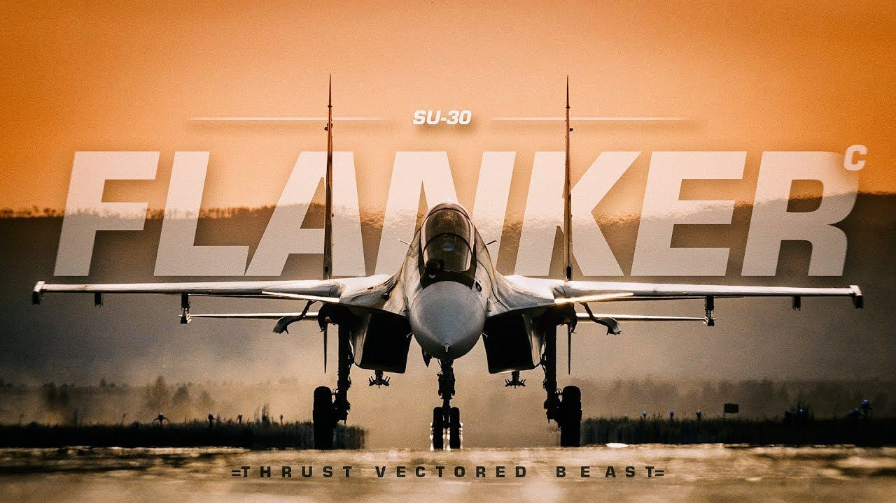

The Su-30MKI is a twinjet multirole air superiority fighter developed by Russia's Sukhoi and built under license by India's Hindustan Aeronautics Limited (HAL) for the Indian Air Force (IAF). It is a variant of the Su-30 family, tailored to meet specific requirements of the IAF.
